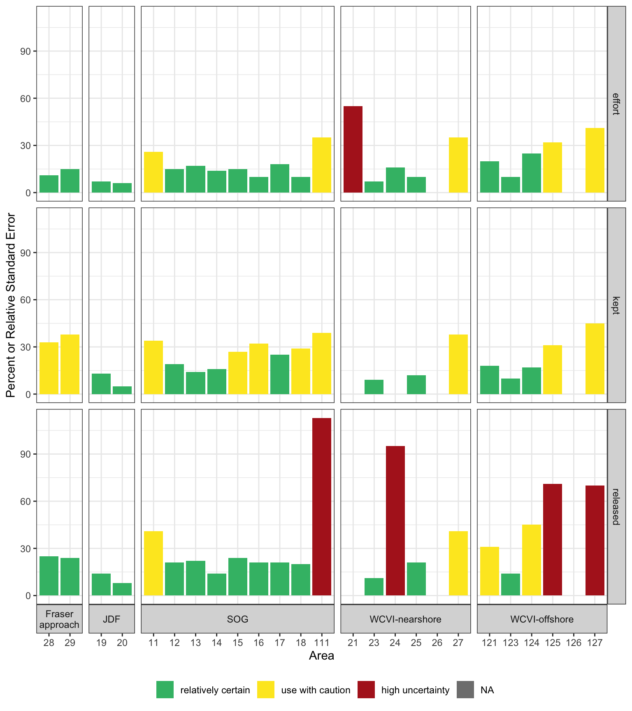
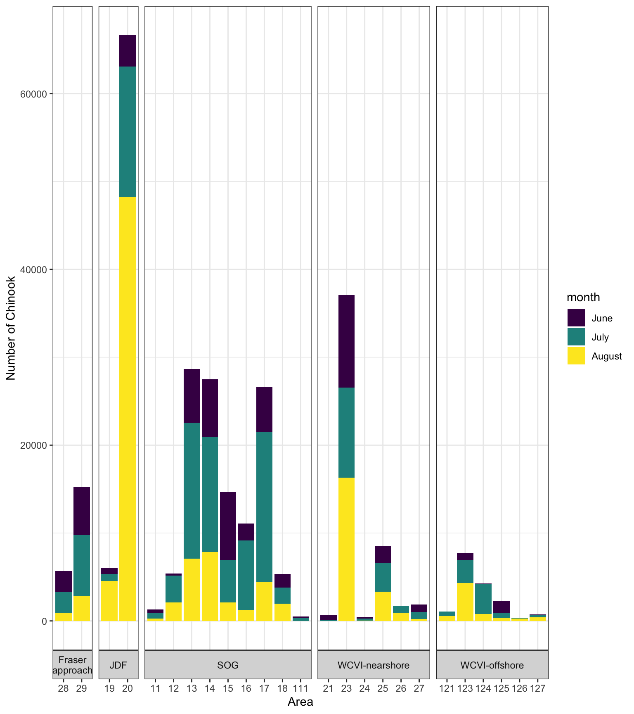
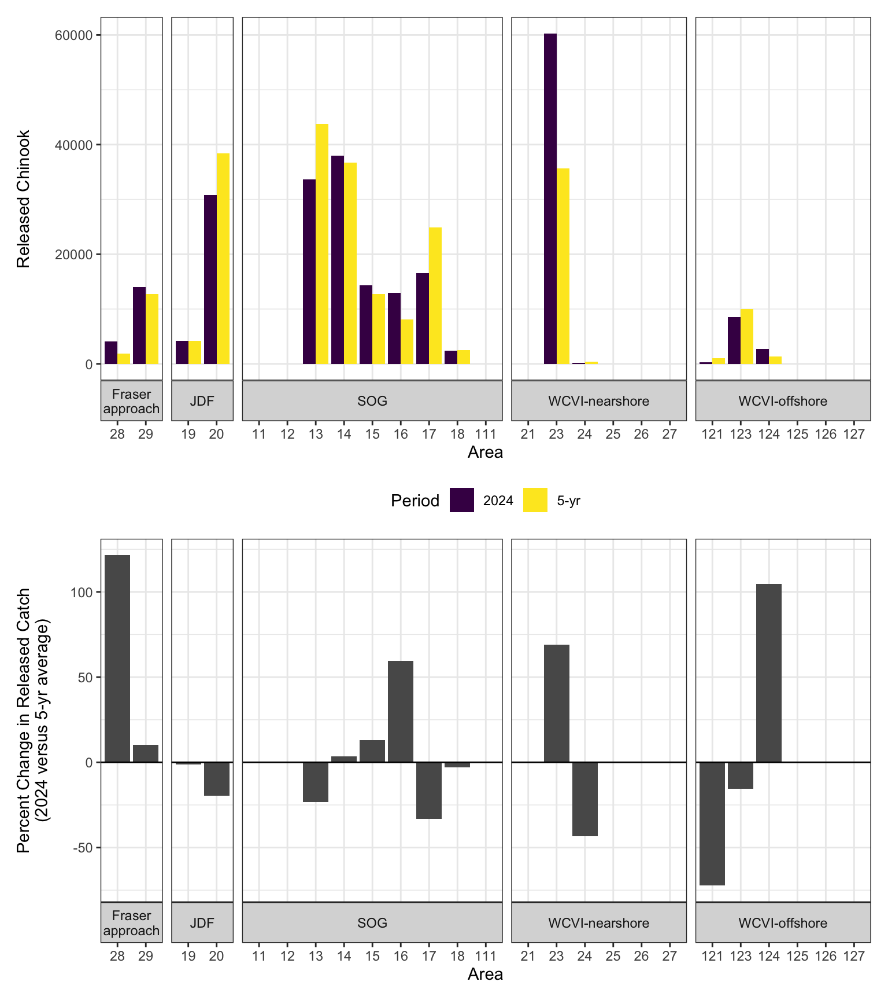
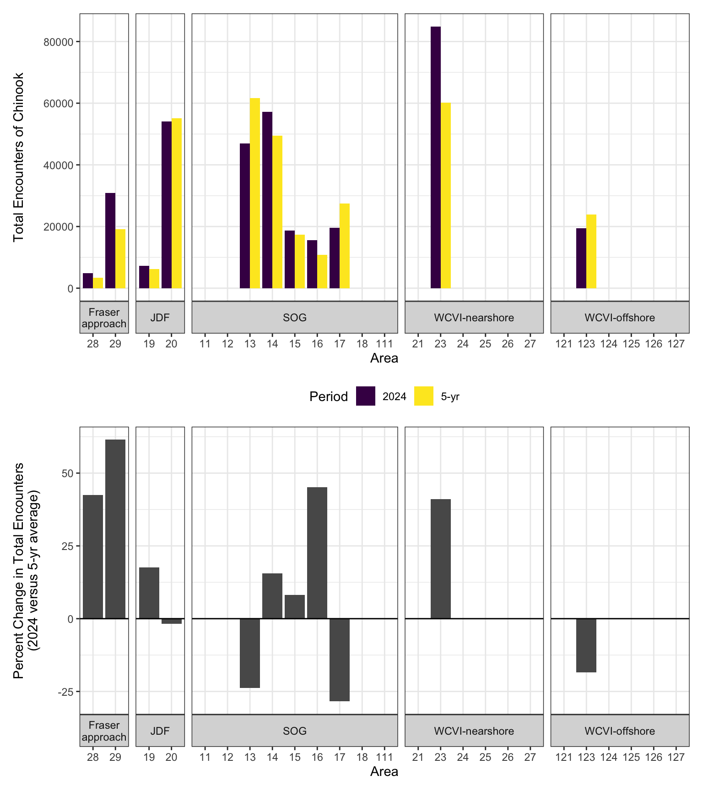
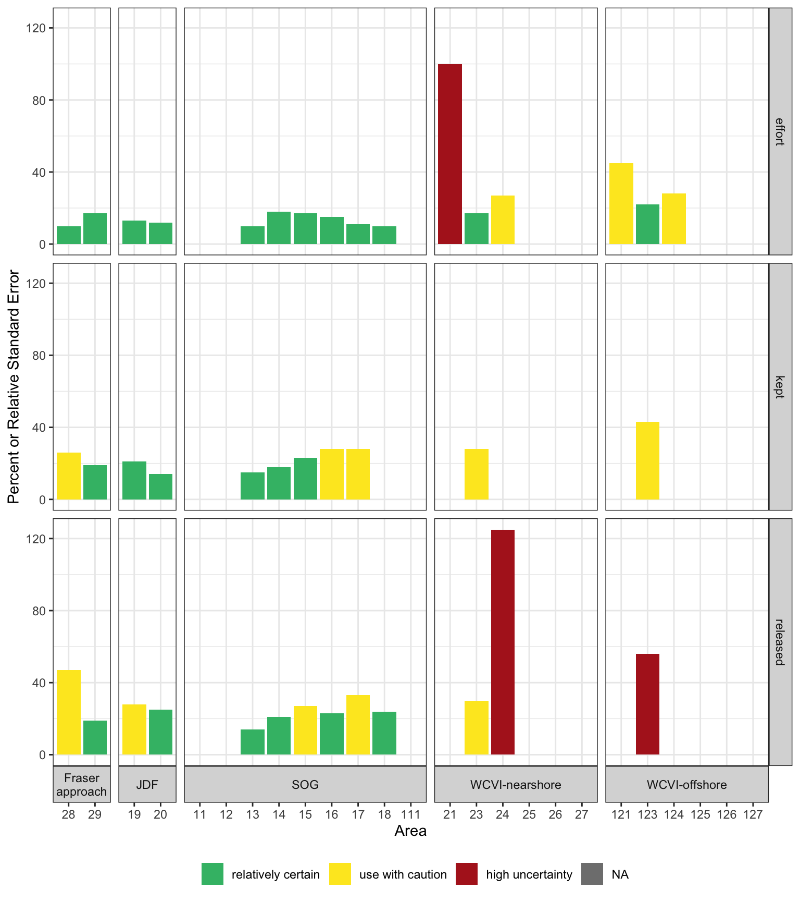
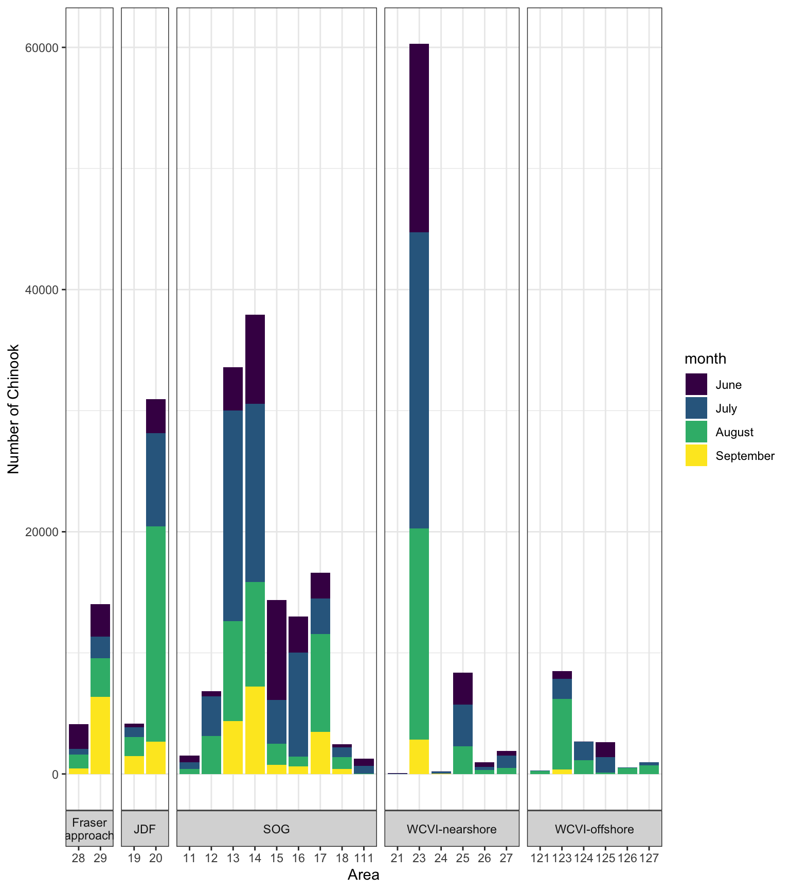
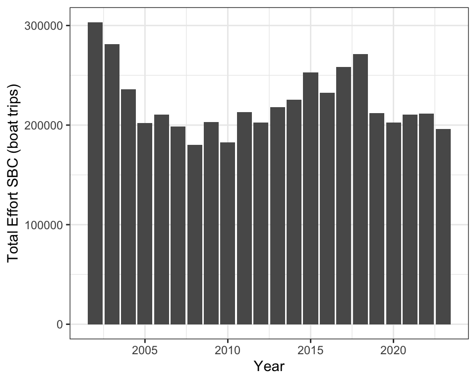
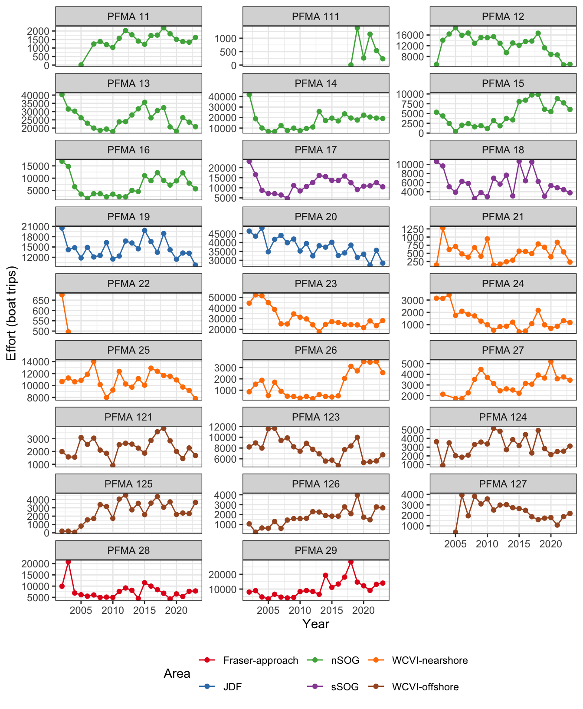
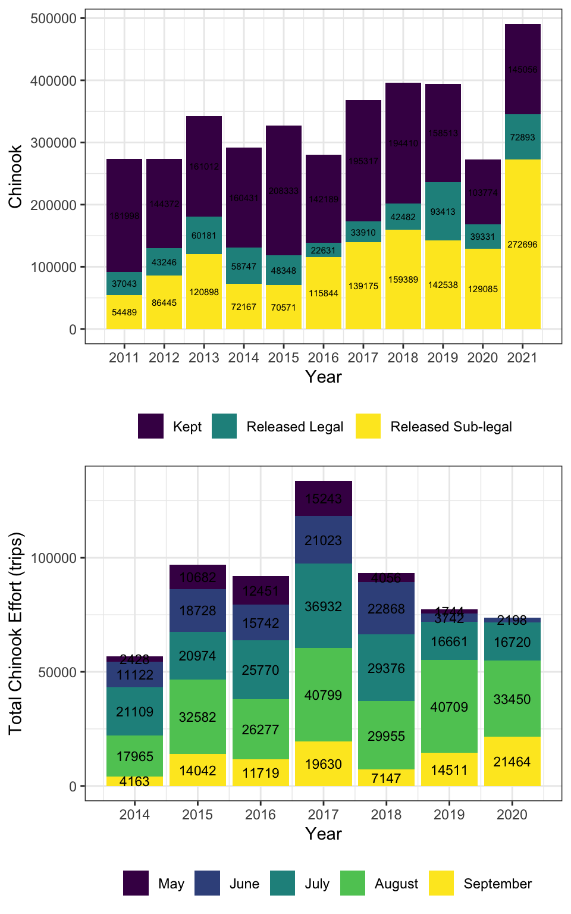
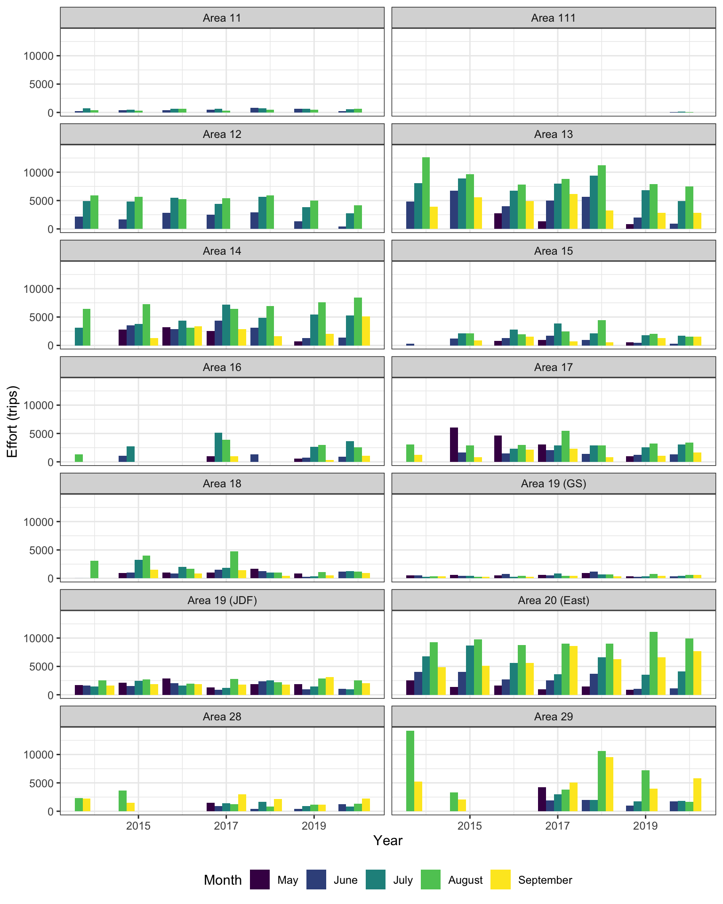

SBC Chinook Catch and Release Summary
Data Sources
- 2010-2021 effort, catch and released numbers are based on DFO provided data
- 2025 versus 5-yr recent average are based on the South Coast Assessment Creel Survey Summary Report from June 2025
Notes
- sub-legal = smaller than the legal size limit
- encounters = total number of kept, released-legal, and released sub-legal chinook
2025 Creel Survey Summary



2024 Creel Survey Summary





Effort Data Including 2022
- data from DFO
- 2002-2022 by month by year by PFMA by management (ISBM versus AABM)
- effort is total boat trips
- unclear whether this is Chinook directed or total recreational effort (including other species etc.)





Appendix A